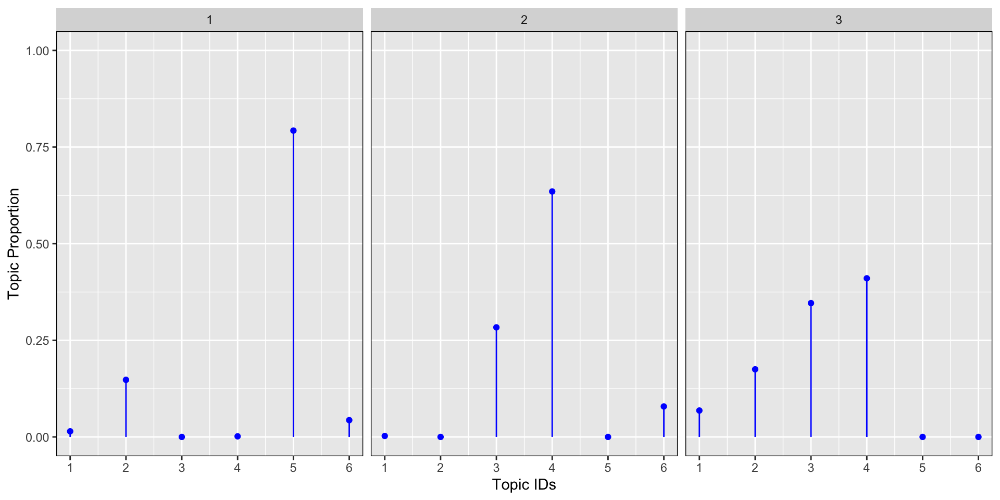

Topic Models Blog Serie
This is the second blog of a six part serie on “Learning, training and scaling topic models: a practical approach in R”. The serie covers:
What are topic models (TM)?
A little introduction to LDA
A gentle look into the Bayesian statistics behind TM
How to train TM and visualise outputs in R?
Setting up AWS with R for scaling TM
How does the TM algorithm work under the hood? (To come)
We will use 3 of Jane Austen’s books to illustrate our examples: Sense and Sensibility, Pride and Prejudice and Persuasion. We will download and process the Austen corpus with the help of the gutenbergr package.
LDA - Latent Dirichlet Allocation
The Latent Dirichlet Allocation (LDA) is one of the most popular algorithms used for topic modeling and the one we will look more closely into. First, what does the name “Latent Dirichlet Allocation” actually mean?
Latent variables
“Latent” refers to the missing variables or the hidden structures of the probabilistic process that we are going to estimate. These hidden structures as we saw in chapter 1 are:
the word proportion per topic also called the topic distribution over words (Dirichlet distribution)
the topic proportion per document (Dirichlet distribution)
the topic assignments or topic allocation (Multinomial distribution)
Allocation
“Allocation” refers to the way the algorithm works. In LDA, a word is associated with only 1 topic and this is called the topic assignment or topic allocation: The hidden topic assignment comes from a multinomial distribution Z with parameter theta (θ).
Dirichlet Distribution
Introduction to the Dirichlet Distribution
Let’s talk a little about the Dirichlet distribution as it is an important concept to grasp in order to parametrize the LDA model in R. So, what is a Dirichlet Distribution? It is a probability distribution of a probability simplex. What is a probability simplex? It is a non-negative vector whose values sum up to 1 or 100%, like so:
(0.6, 0.4)
(0.2, 0.1, 0.7)
(3%, 28%, 18%, 18%) Remember the description of document 1 in chapter 1
The Dirichlet distribution is parametrised by alpha (α) which controls the mean, shape and sparsity of the distribution.
Dirichlet similations in R
Let’s look at an example: let’s say we have a collection of 3 documents where we know that we are dealing with 6 topics and α=0.1. We would like to visualize the topic proportion for these 3 documents.
set.seed(442288)
alpha <- 0.1
documents <- 3
topics <- 6
x <- t(rdirichlet(documents, rep(alpha, topics)))
dt <- data.frame(document = sort(rep(1:3, 6)),
topic = rep(1:6, 3),
topic_prop = as.vector(x))
dt %>%
kable() %>%
kable_styling(bootstrap_options = c("striped", "hover", "condensed"))| document | topic | topic_prop |
|---|---|---|
| 1 | 1 | 0.0145334 |
| 1 | 2 | 0.1477870 |
| 1 | 3 | 0.0000000 |
| 1 | 4 | 0.0015835 |
| 1 | 5 | 0.7926614 |
| 1 | 6 | 0.0434347 |
| 2 | 1 | 0.0025058 |
| 2 | 2 | 0.0000000 |
| 2 | 3 | 0.2835263 |
| 2 | 4 | 0.6351100 |
| 2 | 5 | 0.0000010 |
| 2 | 6 | 0.0788569 |
| 3 | 1 | 0.0683457 |
| 3 | 2 | 0.1749886 |
| 3 | 3 | 0.3462497 |
| 3 | 4 | 0.4104160 |
| 3 | 5 | 0.0000000 |
| 3 | 6 | 0.0000001 |
As you can see from the similation, the sum of the topic proprotion per document equals to 1.
dt %>%
ggplot(aes(x = topic, y = topic_prop, ymin = 0, ymax = topic_prop)) +
geom_point(color = "blue") +
geom_linerange(color = "blue") +
facet_wrap(~ document) +
scale_y_continuous(lim = c(0,1)) +
theme(panel.border = element_rect(fill = 0, colour = "black")) +
ylab("Topic Proportion") +
scale_x_continuous("Topic IDs", breaks = c(1:6))
We can see from the graph above that the topic proportions for the 3 documents are:
mostly concentrated around topic 5 and 2 for document 1
mostly concentrated around topic 4, 3 and 6 for document 2
mostly concentrated around topic 4, 3, 2, and 1 for document 3
The parameter alpha
Let’s now look at another example in R to get the intuition behind the parametrisation of the Dirichlet parameter α. Let’s plot 4 Dirichlet distributions with different alpha parameters: α=0.01, α=0.1, α=1, α=100 for 3 documents and 6 topics. The graph below shows the results for the topic proportion per document. We see from the simulations below that the lower the alpha, the more concentrated the proportion of topic around a few dominant topics. The larger the alpha, the more the proportion of topics are scattered across many topics (flatter distribution) up to the point where for large alpha, the distribution is almost uniformally distributed equally on all topics.
plot_dirichlet <- function(alpha){
set.seed(442288)
documents <- 3
topics <- 6
x <- t(rdirichlet(documents, rep(alpha, topics)))
dt <- data.frame(document = sort(rep(1:3,6)),
topic = rep(1:6,3),
topic_prop = as.vector(x))
dt %>%
ggplot(aes(x = topic, y = topic_prop, ymin = 0,ymax = topic_prop)) +
geom_point(color = "blue") +
geom_linerange(color = "blue") +
facet_wrap(~document) +
scale_y_continuous(lim = c(0,1)) +
theme(panel.border = element_rect(fill = 0, color = "black")) +
ylab("Topic Proportion") +
scale_x_continuous("Topic IDs", breaks = c(1:6))
}
#smallest alpha
plot_dirichlet(0.01)
#small alpha
plot_dirichlet(0.1)
# alpha of 1
plot_dirichlet(1)
# large alpha
plot_dirichlet(100)
Symmetric versus Asymmetric Alpha Parameters
The dirichlet parameter α is a vector. This vector is called symetric when all the elements that make up the vector α have the same value. Similarly, the dirichlet parameter will be called asymmetrical when the vector have a different value. Literature shows that asymmetrical parameters tend to produce slightly better LDA models. Let’s get the intuition for why this happens?
So first what happens when we draws with a vector alpha of 2 elements?
set.seed(224488)
alpha <- c(2, 0.1)
documents <- 3
topics <- 6
x <- t(rdirichlet(documents, rep(alpha, topics)))
x %>%
kable() %>%
kable_styling(bootstrap_options = c("striped", "hover", "condensed"))| 0.2228273 | 0.3343027 | 0.2272768 |
| 0.0147355 | 0.0000000 | 0.0000023 |
| 0.0658137 | 0.0639564 | 0.0982747 |
| 0.0023006 | 0.0002759 | 0.0028980 |
| 0.2112539 | 0.3471035 | 0.1256389 |
| 0.0097800 | 0.0000000 | 0.0158348 |
| 0.2551435 | 0.1089549 | 0.1264869 |
| 0.0000027 | 0.0000000 | 0.0000000 |
| 0.1125539 | 0.0642451 | 0.1893198 |
| 0.0003057 | 0.0000422 | 0.0000000 |
| 0.1052833 | 0.0810976 | 0.1944495 |
| 0.0000000 | 0.0000217 | 0.0198182 |
dt <- data.frame(document=sort(rep(1:3, 6 * length(alpha))),
topic=rep(1:6, 3 * length(alpha)),
topic_prop=as.vector(x))The table above shows that for each document, we get 12 proportions instead of just 6 for the 6 topics. Six of the proportions are drawn with an alpha of 2 and six with an alpha of 0.1. The sum per document (here we refer to the sum per column) is still equals to 1 or 100%.
dt %>% group_by(document, topic) %>%
summarise(topic_prop = sum(topic_prop)) %>%
ggplot(aes(x = topic, y = topic_prop, ymin = 0, ymax = topic_prop)) +
geom_point(colour = "blue") +
geom_linerange(color = "blue") +
facet_wrap(~ document) +
scale_y_continuous(lim = c(0,1)) +
theme(panel.border = element_rect(fill = 0, color = "black")) +
ylab("Topic Proportion") +
scale_x_continuous("Topic Id", breaks = c(1:6))## `summarise()` regrouping output by 'document' (override with `.groups` argument)
As we can see from the 3 documents above, the Dirichlet distribution per topic has now 2 random sets of values per topic: one set generated from an α = 2 and another for α = 0.1. With each element of the α vector, we increase the complexity of the topic proportion distribution per document. This higher level of complexity introduced by asymetric dirichlet parameter tends to replicate the complexity of real world topic proportion per document found in a corpus.
The graphs below shows how this new level of complexity is introduced in the draws with various aymetrical α vectors.
plot_dirichlet <- function(alpha){
set.seed(1234)
documents <- 3
topics <- 6
x <- t(rdirichlet(documents, rep(alpha, topics)))
dt <- data.frame(document=sort(rep(1:3, 6 * length(alpha))),
topic=rep(1:6,3* length(alpha)),
topic_prop=as.vector(x))
dt %>%
group_by(document, topic) %>%
summarise(topic_prop = sum(topic_prop)) %>%
ggplot(aes(x = topic,y = topic_prop, ymin = 0,ymax = topic_prop)) +
geom_point(color = "blue") +
geom_linerange(color = "blue") +
facet_wrap(~document) +
scale_y_continuous(lim = c(0,1)) +
theme(panel.border = element_rect(fill = 0, color = "black")) +
ylab("Topic Proportion") +
scale_x_continuous("Topic Id", breaks = c(1:6))
}
#smallish alpha
plot_dirichlet(c(0.1, 0.08, 0.11, 0.22))## `summarise()` regrouping output by 'document' (override with `.groups` argument)
# alpha close to 1
plot_dirichlet(c(1 , 0.8, 1.3))## `summarise()` regrouping output by 'document' (override with `.groups` argument)
# large alpha
plot_dirichlet(c(0.01, 0.25, 0.85))## `summarise()` regrouping output by 'document' (override with `.groups` argument)
Recommended values for Dirichlet Parameters in LDA
When fitting LDA models, some methods requires the dirichlet parameters to be set apriori. Griffiths and Steyvers (2004) recommends:
for the Dirichlet distribution of the topic proportion per document, the alpha parameter α should be set to 50 / K where K is the number of topic to be found in the corpus.
For the distribution of the word proportion per topic, the parameter of the Dirichlet, eta should be set to 0.1.
Conclusion and Next Chapter
We have now introduced what the LDA algorithms uncover and how the Dirichlet distribution in an important concept for the parametrisation of the TM.
In the next chapter we will gently look into the Bayesian statistics of topic modeling.
Learning Ressources
Dirichlet function in R: https://www.rdocumentation.org/packages/DirichletReg/versions/0.6-3/topics/Dirichlet
Dirichlet wikipedia page: https://en.wikipedia.org/wiki/Dirichlet_distribution
Professor Blei KDD Tutorial: http://www.ccs.neu.edu/home/jwvdm/teaching/cs6220/fall2016/assets/pdf/blei-kdd-tutorial.pdf
Professor Blei lectures on Topic models at Machine Learning Summer School (MLSS), Cambridge 2009 part 1 & 2 with slides: http://videolectures.net/mlss09uk_blei_tm/
Introduction into Latent Dirichlet Allocation by Professor Bobby B. Lyle at SMU School of Engineering URL: https://pdfs.semanticscholar.org/presentation/7f54/8af3930a4f10a012a46bc7956ac6da8c38e3.pdf
References
Blei DM, Ng AY, Jordan MI (2003b). “Latent Dirichlet Allocation.” Journal of Machine Learning Research, 3, 993–1022, page 1009. URL http://www.jmlr.org/papers/volume3/blei03a/blei03a.pdf
Griffiths TL, Steyvers M (2004). “Finding Scientific Topics.” Proceedings of the National Academy of Sciences of the United States of America, 101, 5228–5235. URL http://psiexp.ss.uci.edu/research/papers/sciencetopics.pdf
Grün, B. & Hornik, K. (2011). topicmodels: An R Package for Fitting Topic Models.. Journal of Statistical Software, 40(13), 1-30.
Ponweiser M., “Latent Dirichlet Allocation in R”, Diploma Thesis, Institute for Statistics and Mathematics, 2012. URL http://epub.wu.ac.at/3558/1/main.pdf